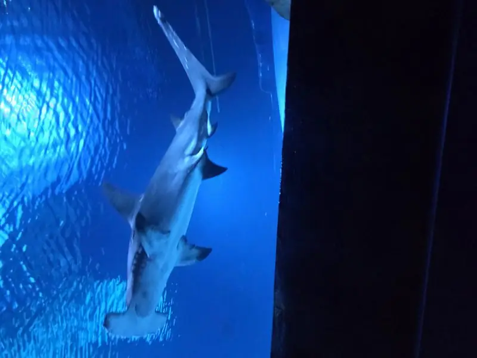
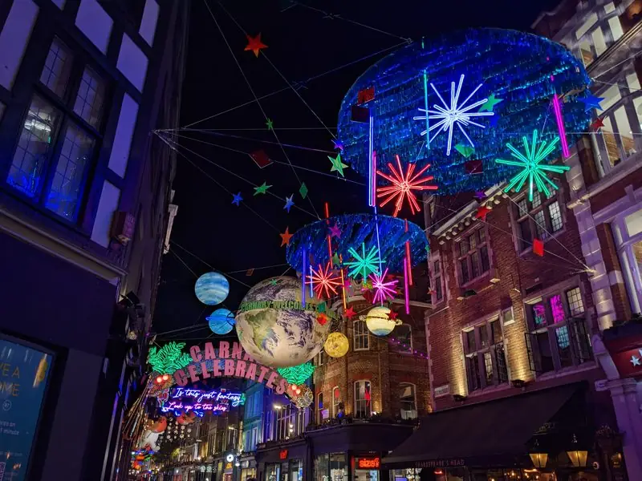
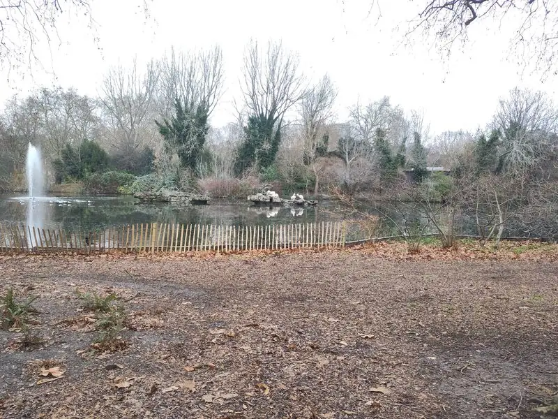
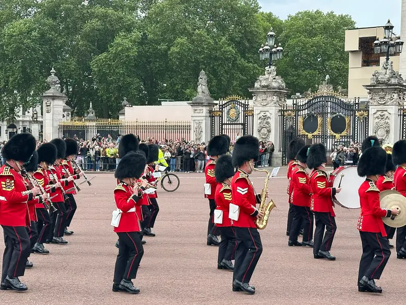
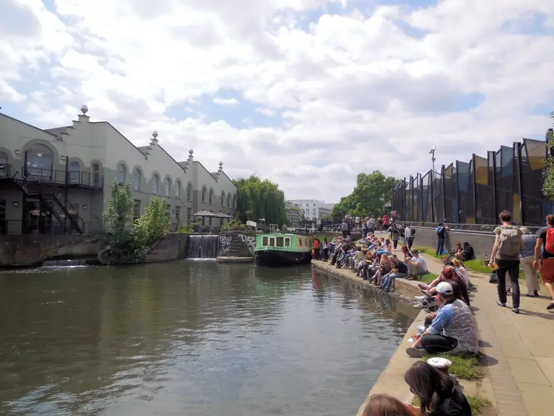

05:15
05:15
Aeroporto di Bologna
Due ore prima del volo: banco British Airways, controlli e gate.
🧭 Portami qui 🚗 in autofoto: Threecharlie / CC BY-SA 3.0
15–17 novembre 2026 · 3 giorni, 2 notti
Alessandro, Vale e Olly
✓ Disponibile offline
🖼️ Versione per immagini, per OllyTocca una giornata per aprire il dettaglio. Gli orari sono una proposta, ricavata da voli, check-in e distanze: vanno confermati.
Arrivo, acquario, riposo e Hamleys col buio
▼
05:15
Due ore prima del volo: banco British Airways, controlli e gate.
🧭 Portami qui 🚗 in autofoto: Threecharlie / CC BY-SA 3.0
 07:00
07:00
BLQ → LHR · 2 h 40 di volo. Si atterra alle 08:40, ora di Londra.
Airbus A320neo. A Londra l’orologio va indietro di un’ora: si guadagna un’ora di fuso.
foto: Alex Noble / CC0
 08:40
08:40
Terminal 5. Passaporti allo sportello con l’agente: i varchi automatici sono dai 10 anni in su. Niente nastro bagagli, solo bagaglio a mano.
foto: Warren Rohner / CC BY-SA 2.0
 09:50
09:50
⏱️ 50–60 min · due opzioni
📌 Appena superati i passaporti, aprite TfL Go o Google Maps: se c’è un’Elizabeth line entro una decina di minuti, prendetela; se il prossimo è fra mezz’ora, prendete la Piccadilly: arrivate alla stessa ora e spendete meno.
Olly gratis in entrambi i casi. Contactless o telefono, una carta per adulto.
Elizabeth la domenica: per esempio 09:49 → Waterloo 10:40, poi 10:20 → 11:07. Treni nuovi e spaziosi. Piccadilly: per esempio 09:53 → Waterloo 10:54, poi 10:05, 10:17. Si tira dritto a Southbank: con gli zaini in spalla non serve passare da casa.
foto: Chris McKenna (Thryduulf) / CC BY-SA 4.0
 10:45
10:45
⏱️ 1 h 15
Lungofiume e pranzo. Winter Market se è già aperto: la data non è confermata.
Se le bancarelle non ci sono ancora, il pranzo si fa dentro il Southbank Centre o lungo il fiume.
foto: Robin Stott / CC BY-SA 2.0
 12:30
12:30
⏱️ 2 h
Domenica 10:00–17:00, fascia oraria da prenotare online. Zaini fino a 30 litri; guardaroba non c’è.
Squali, pinguini e il tunnel sottomarino, dentro County Hall.
foto: ʘx / CC BY-SA 4.0
⏱️ ~25 min
Fermata St Thomas’ Hospital / County Hall (3 min a piedi), bus 12 fino a Piccadilly Circus (14 min), poi 8 min a piedi. Olly gratis.
🧭 Portami qui 🚌 coi mezzi 15:00
15:00
⏱️ 15 min
18 Brewer Street, 2 minuti da casa. Domenica 11:00–18:00. Piano B: Whole Foods a Piccadilly Circus, aperto fino alle 18:00.
Gastronomia italiana: pasta fresca, salumi, sughi. Si compra prima di salire a casa, così la cena è già in frigo.
foto: Ewan-M / CC BY-SA 2.0
 15:15
15:15
⏱️ 1 h 15
Chiave digitale Clevio, ingresso libero dopo le 15:00. Zaini giù e riposo vero, dopo la sveglia all’alba.
🧭 Portami qui 🚶 a piedifoto: No Swan So Fine / CC BY-SA 4.0
 16:30
16:30
⏱️ 1 h
188-196 Regent Street, 3-4 minuti a piedi. Domenica 12:00–18:00. La sorpresa per Olly, dopo il riposo e col buio (tramonto ~16:10).
Con le luci di Regent Street, se sono già accese. Le dimostrazioni dei commessi sono visive.
foto: DAVID HOLT / CC BY-SA 2.0
 17:30
17:30
Sulla via di casa da Hamleys, due minuti a piedi: a quell’ora sono accese da un pezzo.
🧭 Portami qui 🚶 a piedifoto: Christine Matthews / CC BY-SA 2.0
18:00
Con la spesa di Lina Stores, già in frigo dal pomeriggio.
🧭 Portami qui 🚶 a piedifoto: No Swan So Fine / CC BY-SA 4.0
Quasi tutto a piedi, una sola tratta in metro
▼
09:25
Colazione in zona e via a piedi: Trafalgar Square è a venti minuti.
🧭 Portami qui 🚶 a piedifoto: No Swan So Fine / CC BY-SA 4.0
 09:45
09:45
⏱️ 10 min
I leoni e le fontane, poi The Mall sotto l’Admiralty Arch.
L’albero norvegese di solito arriva a inizio dicembre: il 16 novembre potrebbe non esserci ancora.
foto: Diliff / CC BY-SA 3.0
⏱️ ~20 min a piedi
Admiralty Arch → The Mall → parco, con gli scoiattoli. Tutto in piano: evitare la scalinata del Duke of York se Google Maps la propone.
🧭 Portami qui 🚶 a piedi 10:15
10:15
⏱️ 45 min
In prima fila contro la ringhiera entro le 10:20. Le cancellate da cui si vede sono sul lato Birdcage Walk del piazzale, non davanti alla cappella.
Verso le 10:30 la nuova guardia si schiera e viene ispezionata con la banda; verso le 10:57 la colonna esce e marcia verso Buckingham. Orari indicativi. Molta meno folla che davanti al palazzo, e si va via subito.
foto: Adrian Snood / CC BY 2.0
 11:05
11:05
⏱️ 10 min
Si arriva seguendo la banda lungo Spur Road (300 m): il palazzo con i soldati che arrivano. Solo esterno, le State Rooms a novembre sono chiuse.
🧭 Portami qui 🚶 a piedifoto: Diliff / CC BY-SA 3.0
 11:15
11:15
⏱️ 45 min
Lungo il lago verso est: pellicani, area giochi, toilette e caffè (Inn the Park).
🧭 Portami qui 🚶 a piedifoto: Colin / CC BY-SA 3.0
 12:05
12:05
⏱️ 15 min
Dal parco, sotto l’arco, fino a Whitehall: i cavalli nelle garitte (10:00–16:00). La cerimonia a cavallo delle 11:00 in questo piano non si vede.
🧭 Portami qui 🚶 a piedifoto: Lewis Clarke / CC BY-SA 2.0
 12:25
12:25
⏱️ 15 min
Parliament Square e il ponte di Westminster.
🧭 Portami qui 🚶 a piedifoto: Domob / CC BY-SA 4.0
⏱️ 1 h
Un’ora per mangiare prima della metro per South Kensington.
⏱️ 7 min
Diretta, passa ogni pochi minuti, ~£3 a testa, Olly gratis. Poi ~10 min a piedi fino a Harrods.
🧭 Portami qui 🚇 coi mezzi 14:10
14:10
⏱️ 1 h 50
Vetrine di Natale e tè alle Tea Rooms. Dieci minuti a piedi da South Kensington.
🧭 Portami qui 🚶 a piedifoto: Editor5807 / CC BY-SA 4.0
⏱️ 10 min
Da Harrods lungo Brompton Road: l’ingresso al museo è alle 16:30, non prima.
🧭 Portami qui 🚶 a piedi 16:30
16:30
⏱️ 1 h 15
Ingresso a fascia oraria alle 16:30, non prima. Chiude alle 17:50. Dieci minuti a piedi da Harrods.
I tre biglietti sono già presi: sono nella sezione Biglietti, da mostrare allo schermo.
foto: Diliff / CC BY-SA 3.0
 18:00
18:00
Gli angeli sospesi sopra la strada, sulla via del rientro verso Soho. Cena in zona.
🧭 Portami qui 🚇 coi mezzifoto: Oast House Archive / CC BY-SA 2.0
Canale, fish & chips, mercato, poi Heathrow
▼
10:30
Camera da lasciare alle 10:30. Zaini in spalla: si va a Camden, poi Covent Garden e l’aeroporto.
Con solo bagaglio a mano non serve nessun deposito.
foto: No Swan So Fine / CC BY-SA 4.0
⏱️ ~25 min
15 min a piedi fino a Tottenham Court Road, poi Northern line diretta fino a Camden Town (9 min). Arrivo ~11:00. ~£3 a testa, Olly gratis.
🧭 Portami qui 🚇 coi mezzi 11:00
11:00
⏱️ 1 h 15
Il canale con le barche e i mercati, da vedere la mattina con poca folla. Orari dei mercati non verificati: di solito dalle 10:00.
↪️ In ritardo? Saltate Covent Garden: Northern line fino a Tottenham Court Road (7 min), poi Elizabeth line fino a Heathrow T5 (36 min). Per esempio, partendo alle 14:49 si arriva alle 15:36.
Percorso · MartedìPiano B: Camden Town → Heathrow T5 🚇 con i mezzi 🧭 Portami qui 🚇 coi mezzifoto: Can Pac Swire / CC BY-SA 2.0
 12:15
12:15
⏱️ 1 h
30 Hawley Crescent, martedì 11:00–22:00. Locale anni ’50, 4,2 su ~6.000 recensioni Google. Fish & chips: il piatto più tipico di Londra, semplice per Olly.
🧭 Portami qui 🚶 a piedifoto: Robert Lamb / CC BY-SA 2.0
⏱️ ~15 min
Northern line diretta Camden Town → Leicester Square (8 min), poi 5 min a piedi. ~£3 a testa, Olly gratis.
🧭 Portami qui 🚇 coi mezzi 13:30
13:30
⏱️ 1 h 45
Dalla metro di Leicester Square, 5 minuti a piedi: il mercato coperto e gli artisti di strada. Il pranzo è già fatto a Camden.
🧭 Portami qui 🚶 a piedifoto: Dietmar Rabich / CC BY-SA 4.0
 15:15
15:15
⏱️ 46–56 min · due opzioni
📌 Volo alle 18:10: puntate ad arrivare a T5 verso le 16:10. Alle 15:10 guardate TfL Go: se l’Elizabeth delle 15:30 da Tottenham Court Road è confermata, andate a piedi fin lì; altrimenti prendete la Piccadilly delle 15:25 da Covent Garden.
Olly gratis in entrambi i casi.
Elizabeth: per esempio 15:30 → 16:06, 16:00 → 16:36. Piccadilly: per esempio 15:25 → 16:21, 15:37 → 16:34. Gli zaini sono già con voi dal check-out, quindi si parte da dove siete.
foto: DiscoA340 / CC BY-SA 4.0
 16:10
16:10
Circa 50 minuti di metro dal centro. Check-in, controlli e gate al Terminal 5.
🧭 Portami qui 🚇 coi mezzifoto: Andrew Milligan sumo / CC BY 2.0
18:10
LHR → BLQ · 2 h 15 di volo. In Italia l’orologio va avanti di un’ora.
Airbus A320.
foto: Alex Noble / CC0
 21:25
21:25
Si atterra al Marconi alle 21:25, ora italiana.
foto: Ex13 / CC BY-SA 3.0
Tocca un codice per aprirlo a schermo pieno. Funzionano anche senza rete.
Appartamento · Booking 594677715179 Beak Street, W1F 9SU · indirizzo per il taxi più sotto🅿️ Parcheggio aeroporto · domenica all’ingresso, martedì sera all’uscita
€ 63,00 Pagato
Tenere il QR a portata di mano su questa pagina all’ingresso del parcheggio (P1, Bologna) — nessuna stampa necessaria.
1001401807011726169
1001401807011726170
1001401807011726171
⏰ Ingresso a fascia oraria — non presentarsi prima delle 16:30. Museo aperto 10:00–17:50, ultimi ingressi in galleria verso le 17:30.
Order ID 7800197 · South Kensington Admission, Natural History Museum
79 Beak Street
London W1F 9SU
🔑 Check-in autonomo con chiave digitale Clevio — arriva via email ~2 giorni prima dell'arrivo, ingresso libero dopo le 15:00. Verificare che il link/dominio sia legittimo (clevio.io o dominio ufficiale) e che non venga richiesto alcun pagamento in quel passaggio.
Da sfogliare insieme prima di partire: guardare le foto vere di ciò che vedrà l'aiuta ad anticipare, riconoscere e nominare.






Un colore per ogni giornata. Linea piena = a piedi, tratteggiata = metro.
🎒 I due buchi (domenica prima delle 15:00, martedì dopo le 10:30) non sono un problema: si viaggia con il solo bagaglio a mano sotto il sedile e gli zaini restano in spalla. Da sapere però: il check-in è self-service, una reception dove lasciare i bagagli potrebbe non esserci — va chiarito con l’host prima di un eventuale viaggio con la valigia.
Perché questa zona: è il punto di minor cammino cumulativo per la giornata di lunedì (la Royal walk, sette tappe), tutte raggiungibili in 12–21 minuti a piedi, zero attraversamenti del fiume. Si sacrifica la comodità verso Southbank e South Kensington (serve la metro), accettabile perché cadono su giornate più leggere (domenica e martedì).
Controlli anti-phishing prima di partire
▼Stima ~€1.496 con la Piccadilly, ~€1.543 con l’Elizabeth
▼| Voce | Stato | Importo |
|---|---|---|
| Voli (BA547/BA546) | ✅ pagato | €433,39 |
| Alloggio (Bright Carnaby Soho)£538,90 addebitati in euro | ✅ pagato | €648,82 |
| Transfer e mezzitariffe TfL contactless, Olly gratis, con la Northern line per Camden (+£12, ~€15): ~€63 con la Piccadilly, ~€110 con l’Elizabeth andata e ritorno | 💶 stima | ~€63 · ~€110 |
| UK ETA ×3£20 a persona · tutte e tre fatte; Alessandro €24,31, Vale e Olly importo in euro da confermare | 💶 stima | ~€73 |
| SEA LIFE3 × €32,57 «a partire da», prezzo bambino da verificare | 💶 stima | ~€98 |
| Spesa e pasti | 💶 stima | ~€180 |
| Totalecon la Piccadilly · con l’Elizabeth A/R | ~€1.496 · ~€1.543 |
Il piano base resta a piedi e in braccio. Se Olly si stanca troppo, a Londra ci sono servizi che portano il passeggino dove state. Nessuno pubblica chiaramente il prezzo di un noleggio di due o tre giorni: prezzo da verificare al momento della prenotazione.
Prima di prenotare: controllare il peso massimo del modello rispetto a Olly, che ha 5 anni, e che si chiuda abbastanza da salire in metro.
Le foto delle tappe e del viaggio di Olly, con i link
▼ ✨ Plus — se avanza tempo
✨ Plus — se avanza tempo
Teatrini di carta storici, con i personaggi da ritagliare e montare. È dentro il mercato coperto: zero deviazione.
🧭 Portami qui 🚶 a piedifoto: Jack1956 / CC0
 ✨ Plus — se avanza tempo
✨ Plus — se avanza tempo
Quattro piani e il Pick & Mix a peso: ci si passa quando capita.
⚠️ Prezzi alti segnalati nelle recensioni: occhio al Pick & Mix a peso.
🧭 Portami qui 🚶 a piedifoto di famiglia